측량기능사 (2015-10-10 기출문제)
1과목: 임의 구분
1. 삼각측량의 작업 순서가 옳은 것은?
- 도상계획→답사 및 선점→조표→각 관측→삼각망의 조정→좌표 계산
- 도상계획→답사 및 선점→조표→각 관측→좌표 계산→삼각망의 조정
- 답사 및 선점→조표→도상 계획→각 관측→삼각망의 조정→좌표 계산
- 답사 및 선점→조표→도상 계획→각 관측→좌표 계산→삼각망의 조정
(정답률: 50%)

2. 교호수준측량 결과가 각각 A점에서 a1=1.5m, a2=2.4m, B점에서는 b1=1.1m, b2=2.2m일 때 B점의 표고는? (단, A점의 표고는 25.0m)
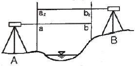
- 25.3m
- 26.3m
- 30.3m
- 31.3m
(정답률: 71%)
3. 트래버스 측량의 결합오차 조정에 대한 설명 중 옳은 것은?
- 컴퍼스법칙은 각관측의 정확도가 거리관측의 정확도보다 좋은 경우에 사용된다.
- 트랜싯법칙은 각관측과 거리관측의 정밀도가 서로 비슷한 경우에 사용된다.
- 컴퍼스법칙은 결합오차를 각 측선의 길이의 크기에 반비례하여 배분한다.
- 트랜싯법칙은 위거 및 경거의 결합오차를 각 측선의 위거 및 경거의 크기에 비례 배분하여 조정하는 방법이다.
(정답률: 64%)
4. 다음 중 지구상의 위치를 표시하는데 주로 사용하는 좌표계가 아닌 것은?
- 평면 직각 좌표계
- 경위도 좌표계
- 4차원 직각 좌표계
- UTM 좌표계
(정답률: 76%)
5. 그림에서 CD 측선의 방위는?
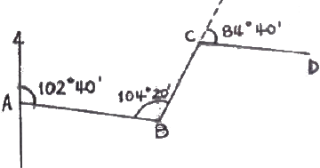
- N 27°40' W
- S 68°20' E
- N 36°40' E
- N 27°30' W
(정답률: 59%)
6. 기준점 측량으로 볼 수 없는 것은?
- 삼각 측량
- 삼변 측량
- 스타디아 측량
- 수준 측량
(정답률: 60%)
7. 평판측량의 방법에 해당되지 않는 것은?
- 지거법
- 방사법
- 전진법
- 교회법
(정답률: 77%)
8. 트래버스 측량의 내업 순서로 옳은 것은?
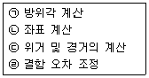
- ㉡→㉠→㉢→㉣
- ㉠→㉢→㉡→㉣
- ㉡→㉠→㉣→㉢
- ㉠→㉢→㉣→㉡
(정답률: 53%)
9. 다음 표에서 A, B측점의 높이차는? (단, 단위는 m임)
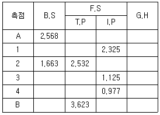
- -0.196m
- 0.196m
- -1.924m
- 1.924m
(정답률: 55%)
10. 표준길이보다 2cm 짧은 25m 테이프로 관측한 거리가 353.28m 일 때 실제 거리는?
- 353.56m
- 353.42m
- 353.14m
- 353.00m
(정답률: 55%)
11. 수준측량의 고저차를 확인하기 위한 검산식으로 옳은 것은?
- ΣB.S-ΣT.P
- ΣF.S-ΣT.P
- ΣI.H-ΣF.S
- ΣI.H-ΣB.S
(정답률: 71%)
12. 트래버스 측량의 용도와 가장 거리가 먼 것은?
- 경계 측량
- 노선 측량
- 지적 측량
- 종ㆍ횡단 수준 측량
(정답률: 61%)
13. 측정 O에서 X1=30°, X2=45°, X3=77°의 각 관측값을 얻었다. X1의 조정된 값은? (단, 각 각의 관측 조건은 동일하다.)
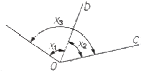
- 30°40‘
- 30°20‘
- 29°40‘
- 29°20‘
(정답률: 53%)
14. 18각형 외각의 합계는 몇 도인가?
- 2880°
- 2900°
- 3240°
- 3600°
(정답률: 76%)
15. 최확값과 경중률에 관한 설명으로 옳지 않은 것은?
- 관측값들의 경중률이 다르면 최확값을 구할 때 경중률을 고려하여 한다.
- 최확값은 어떤 관측값에서 가장 높은 확률을 가지는 값이다.
- 경중률은 표준 편차의 제곱에 반비례한다.
- 경중률은 관측거리의 제곱에 비례한다.
(정답률: 62%)
16. 다음 삼각형에서
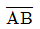
의 거리는> (단, ∠A=61°25'30", ∠B=59°38'26", ∠C=58°56'04"이며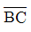
의 거리는 287.58m이다.)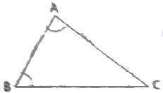
- 289.69m
- 285.48m
- 282.56m
- 280.50m
(정답률: 35%)
17. 오차론에 의해서 처리할 수 있는 오차는?
- 누차
- 착오
- 정 오차
- 우연 오차
(정답률: 52%)
18. 어느 측선의 방위가 S40°E이고 측선 길이가 80m일 때, 이 측선의 위거는?
- -51.423m
- -61.284m
- +51.423m
- +61.284m
(정답률: 60%)
19. 삼각망의 조정에서 제2조정각 54°56‘15“에 대한 표차 값은?
- 11.54
- 12.81
- 13.45
- 14.78
(정답률: 26%)
20. 레벨의 감도가 한 눈금에서 40"일 때 80m 떨어진 표척을 읽은 후 2눈금 이동하였다면 이 때 생긴 오차량은?
- 0.02m
- 0.03m
- 0.04m
- 0.⑤m
(정답률: 35%)
2과목: 임의 구분
21. 거리측량에서 발생할 수 있는 오차의 종류와 예가 올바르게 연결된 것은?
- 정오차 - 눈금을 잘못 읽었다.
- 부정오차 - 테이프의 길이가 표준 길이보다 길거나 짧았다.
- 정오차 - 측정할 때 온도가 표준 온도와 다르다.
- 부정오차 - 측량할 때 수평이 되지 않았다.
(정답률: 52%)
22. 45°는 약 몇 라디안인가?
- 0.174rad
- 0.571rad
- 0.785rad
- 1.571rad
(정답률: 63%)
23. 축척과 정확도에 대한 설명으로 틀린 것은?
- 축척의 분모수가 작은 것이 대축척이다.
- 축척의 분모수가 큰 것이 정확도가 높다.
- 도상거리와 실제거리와의 비가 축척이다.
- 정확도는 참값과 관측값의 편차를 나타낸다.
(정답률: 64%)
24. 수준측량에서 사용되는 용어의 설명으로 틀린 것은?
- 그 점의 표고만을 구하고자 표척을 세워 전시만 취하는 점을 중간점이라 한다.
- 기준면으로부터 측점까지의 연직거리를 지반고라 한다.
- 기준면으로부터 기계 시준선까지의 거리를 기계고라 한다.
- 기지점에 세운 표척의 읽음을 전시라 한다.
(정답률: 57%)
25. A, B 두 점 간의 고저차를 구하기 위해 3개의 노선을 직접 수준 측량하여 다음 표와 같은 결과를 얻었다면 B점의 표고는?
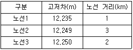
- 12.242m
- 12.245m
- 12.247m
- 12.250m
(정답률: 40%)
26. 삼변측량에 대한 설명으로 옳지 않은 것은?
- 삼각측량에서 수평각을 관측하는 대신에 삼변의 길이를 관측하여 삼각점의 위치를 정확히 구하는 측량이다.
- 삼변측량에서는 변장 측정값에는 오차가 따르지 않는다고 가정한다.
- 전파나 광파를 이용한 거리측량기가 발달하여 높은 정밀도로 장거리를 측량할 수 있게 됨으로써 삼변측량 방법이 발전되었다.
- 토털스테이션을 사용하여 삼편측량을 할 경우, 삼각측량과 같이 삼각점 간의 시준이 필요하다.
(정답률: 54%)
27. 평면 직각 좌표에서 삼각점의 좌표가 (-4325.68m, 585.25m)라 하면 이 삼각점은 좌표 원점을 중심으로 몇 상한에 있는가?(오류 신고가 접수된 문제입니다. 반드시 정답과 해설을 확인하시기 바랍니다.)
- 제1상한
- 제2상한
- 제3상한
- 제4상한
(정답률: 24%)
28. 나무의 높이를 알아보기 위하여 간이측량을 실시하였다. 관측 결과가 그림과 같을 때 나무의 대략적인 높이(h)는? (단, 팔의 길이 60cm, 막대 길이 20cm이다.)
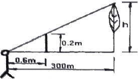
- 75m
- 80m
- 100m
- 150m
(정답률: 71%)
29. 자오선의 북을 기준으로 어느 측선까지 시계방향으로 측정한 각은?
- 방향각
- 방위각
- 고저각
- 천정각
(정답률: 78%)
30. 어느 측선의 방위각이 330°이고, 측선 길이가 120m라 하면 그 측선의 경거는?
- -60,000m
- 36.002m
- 95.472m
- 103.923m
(정답률: 58%)
31. 트래버스측량을 실시하여 출발점으로 돌아와을 경우 출발점과 정확하게 일치되지 않을 때, 이 오차를 무엇이라 하는가?
- 폐합오차
- 시준오차
- 허용오차
- 기계오차
(정답률: 77%)
32. 평판을 세울 때의 오차가 아닌 것은?
- 정준 오차
- 구심 오차
- 표정 오차
- 외심 오차
(정답률: 69%)
33. 외심거리가 1.5cm인 엘리데이드로, 축척 1:300인 평판측량을 하였을 때 도면상에 발생되는 외심오차는?
- 0.01mm
- 0.02mm
- 0.⑤mm
- 0.1mm
(정답률: 45%)
34. 거리가 4km 떨어진 두 점의 각 관측에서 관측오차가 15“ 발생했을 때 위치오차는?
- 284mm
- 291mm
- 29mm
- 310mm
(정답률: 49%)
35. 수준측량에서 거리 7km에 대하여 왕복 오차의 제한이 ±25mm일 때 거리 2km에 대한 왕복 오차의 제한 값은?(오류 신고가 접수된 문제입니다. 반드시 정답과 해설을 확인하시기 바랍니다.)
- ±7mm
- ±13mm
- ±15mm
- ±17mm
(정답률: 41%)
36. GPS측량의 일반적인 특징으로 틀린 것은?
- 극지방에서는 이용할 수 없다.
- 두 측점간의 시통에 관계가 없다.
- 3차원 측량을 동시에 할 수 있다.
- WGS84 좌표계를 사용한다.
(정답률: 76%)
37. 등고선 측정방법 중 직접법에 해당하는 것은?
- 사각형 분할법(좌표점법)
- 레벨에 의한 방법
- 기준점법(종단점법)
- 횡단점법
(정답률: 43%)
38. 지형도에서 지형의 표시 방법과 거리가 먼 것은?
- 투시법
- 음영법
- 점고법
- 등고선법
(정답률: 74%)
39. 노선측량에서 절토 단면적과 성토 단면적, 토공량을 구하기 위해 실시하는 측량은?
- 중심선 측량
- 횡단 측량
- 용지 측량
- 평면 측량
(정답률: 48%)
40. 단곡선의 중앙종거 M1이 50m이면 M2의 거리는?
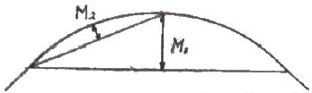
- 9.5m
- 11.0m
- 12.5m
- 16.7m
(정답률: 54%)
3과목: 임의 구분
41. 다음 중 등고선의 종류에 해당하지 않은 것은?
- 주곡선
- 계곡선
- 간곡선
- 완화곡선
(정답률: 82%)
42. 다음 중 단곡선 설치 과정에서 가장 먼저 결정하여야 할 사항은?
- 곡선반지름
- 시단현
- 접선장
- 중심말뚝의 위치
(정답률: 48%)
43. 기점으로부터 교점까지 추가거리가 432.4m이고, 교각이 54°12‘일 때 외할(E)은? (단, 곡선반지름은 320m 이다.)
- 30.5m
- 35.2m
- 39.5m
- 41.0m
(정답률: 36%)
44. 노선 측량에서 노선 선정시 유의해야 할 사항으로 틀린 것은?
- 노선은 가능한 직선으로 하고 경사를 완만하게 한다.
- 절토 및 성토의 운반 거리를 가급적 짧게 한다.
- 토공량이 많고 성토가 많도록 한다.
- 배수가 잘 되는 곳이어야 한다.
(정답률: 80%)
45. 원곡선 설치를 위해 접선장의 길이가 20m이고, 교각이 21°30‘일 때의 반지름은?
- 1⑤.34m
- 31.40m
- 72.63m
- 63.83m
(정답률: 36%)
46. 다음 중 체적을 계산하는 방법이 아닌 것은?
- 단면법
- 점고법
- 등고선법
- 도해 계산법
(정답률: 71%)
47. GPS 측량의 정확도에 영향을 미치는 요소와 거리가 먼 것은?
- 기지점의 정확도
- 관측시의 온도측정 정확도
- 안테나의 높이 측정 정확도
- 위성 정밀력의 정확도
(정답률: 70%)
48. 넓은 지역이나 택지 조성 등의 정지 작업을 위한 토공량을 계산하는 데 사용하는 방법으로, 전 구역을 직사각형이나 삼각형으로 나누어서 토량을 계산하는 방법은?
- 단면법
- 점고법
- 좌표법
- 등고선법
(정답률: 51%)
49. 노선측량에서 원곡선의 종류가 아닌 것은?
- 단곡선
- 3차 포물선
- 반향곡선
- 복심곡선
(정답률: 60%)
50. GPS 측량에서 사용되는 반송파는?
- A1, A2 반송파
- L1, L2 반송파
- D1, D2 반송파
- Z1, Z2 반송파
(정답률: 77%)
51. 축척 1:50,000 지형도에서 표고가 각각 185m, 125m인 두 지점의 수평거리가 30mm일 때 경사 기울기는?
- 2.0%
- 2.5%
- 3.0%
- 4.0%
(정답률: 32%)
52. 그림과 같은 삼각형의 면적은 얼마인가?
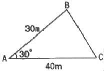
- 262.5m2
- 272.5m2
- 300.0m2
- 332.5m2
(정답률: 63%)
53. 단곡선 설치에서 교각 60°, 반지름 100m, 곡선시점의 추가거리가 140.65m일 때 곡선 종점의 거리는?
- 104.70m
- 140.65m
- 240.65m
- 245.37m
(정답률: 28%)
54. 전리층 오차를 보정할 수 있는 방법으로 가장 적합한 것은?
- 2주파 수신기를 사용한다.
- 고층 빌딩을 피하여 설치한다.
- 안테나고를 높인다.
- 위성 수신각을 높인다.
(정답률: 59%)
55. 노선측량의 단곡선 설치에 사용되는 기호에 대한 명칭의 연결이 옳은 것은?
- B.C.=곡선의 종점
- E.C.=곡선의 시점
- I.P.=교점
- C.L.=접선의 길이
(정답률: 61%)
56. 도로공사 중 A단면의 성토 면적이 24m2, B단면의 성토 면적이 12m2일 때 성토량은? (단, A, B 두 단면간의 거리는 30m 이다.)
- 120m3
- 240m3
- 360m3
- 540m3
(정답률: 39%)
57. 삼변법에 의한 면적계산 방법인 헤론의 공식으로 옳은 것은? (단, a, b, c는 삼각형 3변의 길이, s는 3변길이의 총합을 1/2한 길이임)
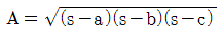
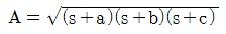
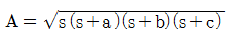
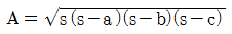
(정답률: 73%)
58. 경사변환선에 대한 설명으로 옳은 것은?
- 동일방향의 경사면에서 경사의 크기가 다른 두 면의 접합선
- 지표면이 높은 곳의 꼭대기 점을 연결한 선
- 지표면의 낮거나 움푹 패인 점을 연결한 선
- 경사가 최대로 되는 방향을 표시한 선
(정답률: 62%)
59.
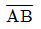
는 등경사의 지형으로, A의 표고는 37.65m, B의 표고는 53.26m이다. A, B를 도상에 옮긴 a,b간의 길이가 68.5mm일 때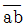
선상에 표고 40.00m 지점은 a에서 몇 mm 떨어진 곳에 위치하는가?- 2.0mm
- 7.9mm
- 10.3mm
- 15.6mm
(정답률: 43%)
60. 그림과 같은 측량결과에 의한 이 지형의 토공량은?
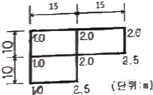
- 525.5m3
- 787.5m3
- 1⑤0.5m3
- 1525.5m3
(정답률: 50%)
1. 도상계획: 측량 대상 지역의 지형과 토평면을 정확하게 파악하고, 측량 계획을 수립합니다.
2. 답사 및 선점: 측량 대상 지역에 대한 실제 측량 작업을 수행합니다.
3. 조표: 측량 결과를 바탕으로 지도를 작성합니다.
4. 각 관측: 삼각측량을 수행하기 위해 삼각형의 각을 측정합니다.
5. 삼각망의 조정: 측정된 삼각형의 각과 길이를 바탕으로 삼각망을 조정합니다.
6. 좌표 계산: 삼각망을 바탕으로 측량 대상 지역의 좌표를 계산합니다.
따라서, 옳은 작업 순서는 "도상계획→답사 및 선점→조표→각 관측→삼각망의 조정→좌표 계산" 입니다.